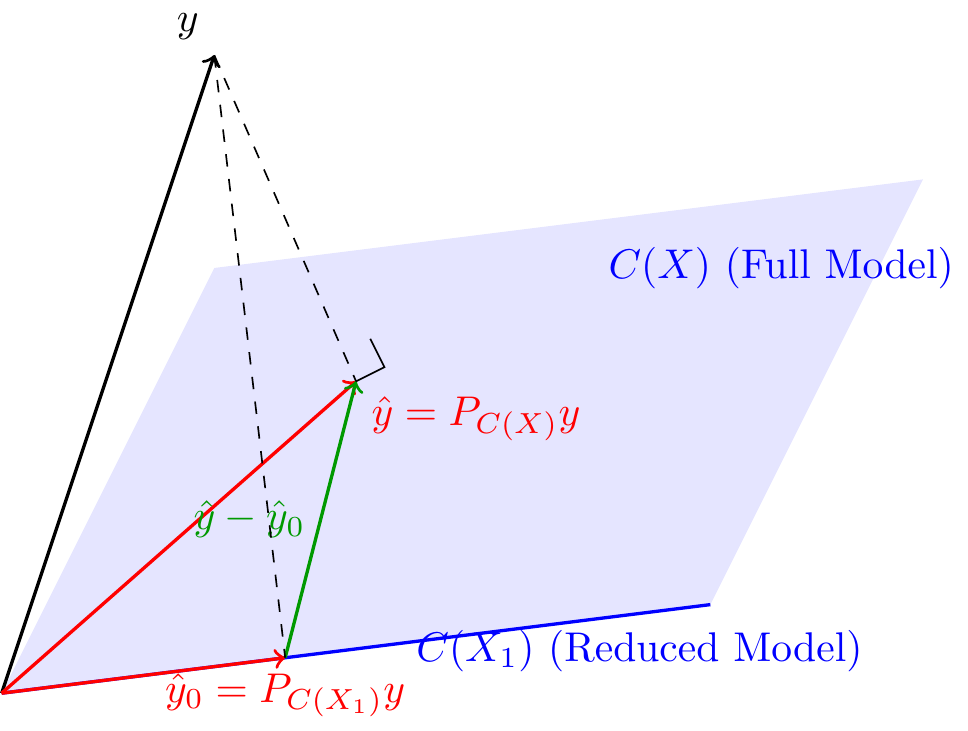
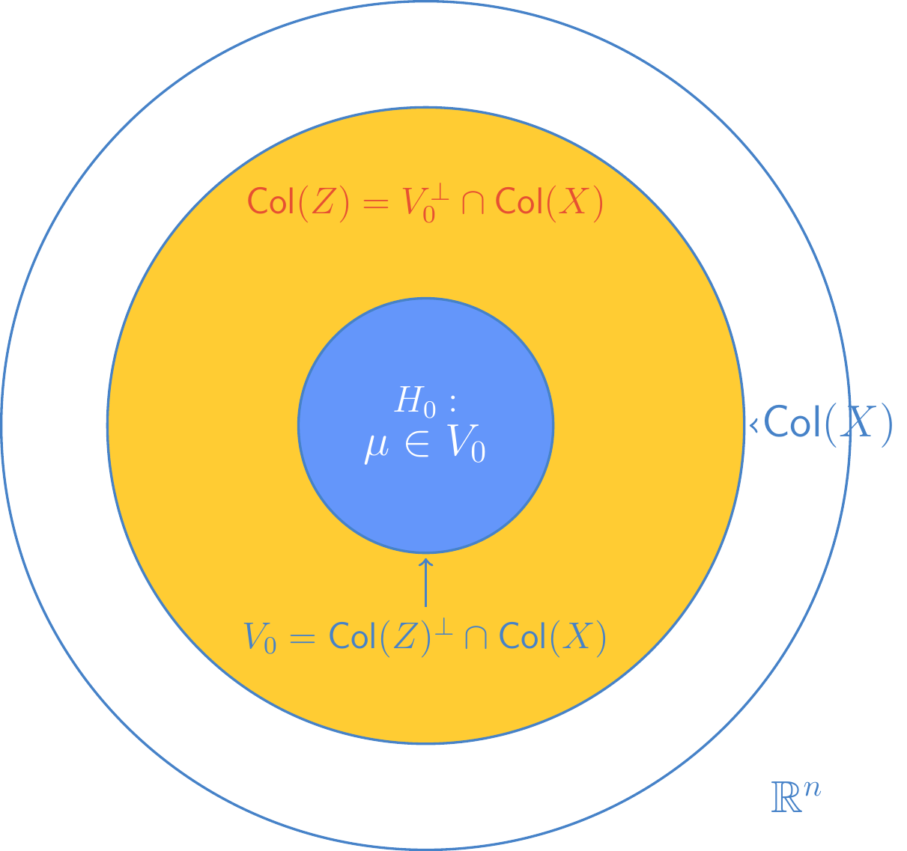
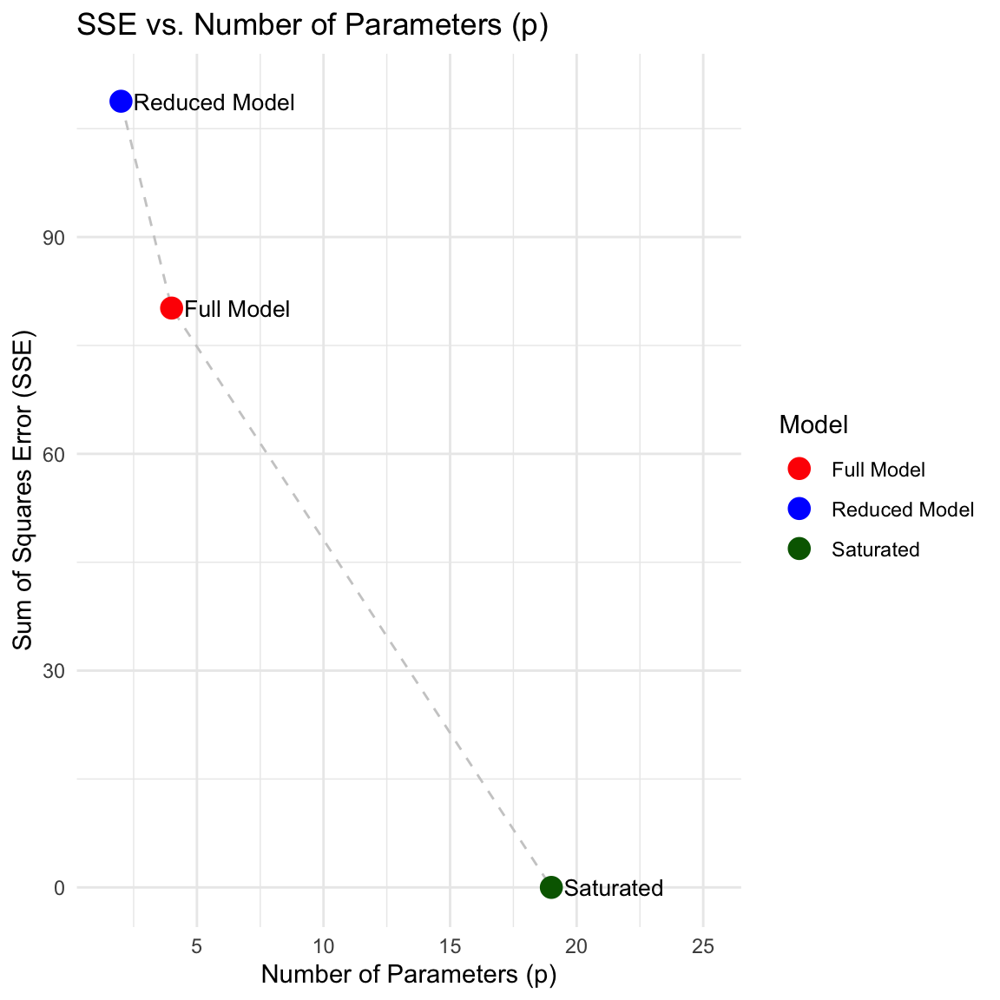
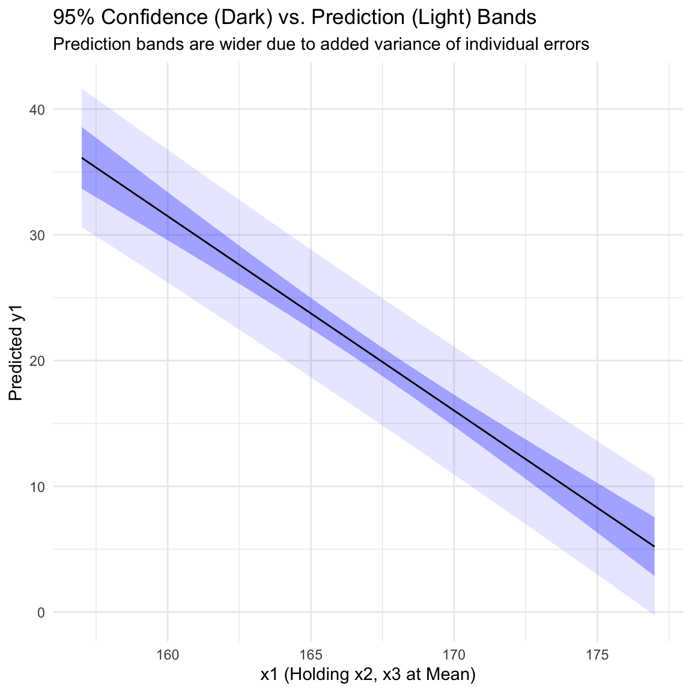

7 Hypothesis Testing in Linear Models
7.1 Testing Reduced Model vs Full Model (Partial F-test)
Consider the general linear model partitioned as follows:
\[ y = X\beta + e = (X_{1}, X_{2}) \begin{pmatrix} \beta_{1} \\ \beta_{2} \end{pmatrix} + e = X_1 \beta_1 + X_2 \beta_2 + e \]
where \(X\) is an \(n \times (k+1)\) matrix, \(X_1\) corresponds to the first set of predictors, and \(X_2\) corresponds to the remaining \(h\) predictors . We assume \(e \sim N(0, \sigma^2 I)\).
We are often interested in testing the hypothesis that the second set of coefficients is zero:
\[ H_0: \beta_2 = 0 \]
This leads to a comparison between two models:
Full Model (FM): The maintained hypothesis where \(\mu \in C(X) = C([X_1, X_2])\) .
\[ y = X_1 \beta_1 + X_2 \beta_2 + e \]
Reduced Model (RM): The model under \(H_0\) where \(\mu \in C(X_1)\).
\[ y = X_1 \beta_1 + e^* \]
The testing problem is to test \(H_0: \mu \in C(X_1)\) versus \(H_1: \mu \in C(X)\) but \(\mu \notin C(X_1)\) .
7.1.1 Geometric Interpretation
Since \(C(X_1) \subset C(X)\), if the Reduced Model is true, the Full Model must also be true. Under \(H_0\), the least squares estimates of the mean \(\mu\) from both models, \(P_{C(X_1)}y\) and \(P_{C(X)}y\), estimate the same quantity.
This suggests that the difference vector :
\[ P_{C(X)}y - P_{C(X_1)}y = (P_{C(X)} - P_{C(X_1)})y = \hat{y} - \hat{y}_0 \]
should be “small” under \(H_0\). The matrix \(P_{C(X)} - P_{C(X_1)}\) is the projection matrix onto \(C(X_1)^{\perp} \cap C(X)\), which is the orthogonal complement of \(C(X_1)\) with respect to \(C(X)\).
The squared length of this difference is used as a test statistic:
\[ \text{SSH} = ||\hat{y} - \hat{y}_0||^2 = y^T (P_{C(X)} - P_{C(X_1)}) y \]
7.1.2 Distributional Properties
To derive a test, we analyze the distribution of the sum of squares.
Theorem 7.1 (Distribution of Quadratic Forms) Suppose \(y \sim N(X\beta, \sigma^2 I)\) where \(X\) is \(n \times (k+1)\) of full rank, \(X\beta = X_1\beta_1 + X_2\beta_2\), and \(X_2\) is \(n \times h\). Let \(\hat{y} = P_{C(X)}y\), \(\hat{y}_0 = P_{C(X_1)}y\), and \(\mu_0 = P_{C(X_1)}\mu\). Then:
\(\frac{1}{\sigma^2} ||y - \hat{y}||^2 = \frac{1}{\sigma^2} y^T (I - P_{C(X)}) y \sim \chi^2(n - k - 1)\).
\(\frac{1}{\sigma^2} ||\hat{y} - \hat{y}_0||^2 = \frac{1}{\sigma^2} y^T (P_{C(X)} - P_{C(X_1)}) y \sim \chi^2(h, \lambda_1)\).
where the non-centrality parameter is \(\lambda_1 = \frac{1}{\sigma^2} ||(P_{C(X)} - P_{C(X_1)})\mu||^2 = \frac{1}{\sigma^2} ||\mu - \mu_0||^2\).
The two quadratic forms are independent.
Under \(H_0\), \(\mu \in C(X_1)\), so \(\mu = \mu_0\) and \(\lambda_1 = 0\). Thus, the numerator sum of squares follows a central \(\chi^2\) distribution.
7.1.3 The F-Test
Based on the independence and distribution of the quadratic forms, we construct the F-statistic.
Theorem 7.2 (F-Test for Reduced Model) Under the conditions of Theorem 7.1, the statistic
\[ F = \frac{||\hat{y} - \hat{y}_0||^2 / h}{||y - \hat{y}||^2 / (n - k - 1)} = \frac{\text{SSH}/h}{\text{SSE}_{\text{FM}}/(n - k - 1)} \]
follows a non-central F-distribution \(F(h, n - k - 1, \lambda_1)\). Under \(H_0: \beta_2 = 0\), it follows a central F-distribution \(F(h, n - k - 1)\) .
Using the Pythagorean Theorem, we can express the numerator in terms of Sum of Squares for Error (SSE) or Regression (SSR):
\[ ||\hat{y} - \hat{y}_0||^2 = SSE_{\text{RM}} - \text{SSE}_{\text{FM}} \]
\[ ||\hat{y} - \hat{y}_0||^2 = \text{SSR}_{\text{FM}} - \text{SSR}_{\text{RM}} \]
This quantity is often denoted as \(\text{SS}(\beta_2 | \beta_1)\), the “extra” regression sum of squares due to \(\beta_2\) after accounting for \(\beta_1\).
The ANOVA table for this comparison is constructed as follows:
| Source | SS | MS | F |
|---|---|---|---|
| Hypothesis | \(\text{SSR}_{\text{FM}} - \text{SSR}_{\text{RM}}\) | \(\text{SSH}/h\) | \(\frac{\text{SSH}/h}{\text{MSE}_{\text{FM}}}\) |
| Error | \(\text{SSE}_{\text{FM}}\) | \(\text{SSE}_{\text{FM}}/(n-k-1)\) | |
| Total | \(\text{SST}\) |
7.1.4 Overall Regression Test
A special case of the test \(H_0: \beta_2 = 0\) is when \(\beta_1\) contains only the intercept \(\beta_0\), and \(\beta_2\) contains all slope coefficients. The model is:
\[ y = \beta_0 j_n + X_2 \beta_2 + e \]
The hypothesis \(H_0: \beta_2 = 0\) is equivalent to \(H_0: \beta_1 = \beta_2 = \dots = \beta_k = 0\). In this case:
- The reduced model estimates \(\hat{y}_0 = \bar{y}j_n\).
- The degrees of freedom \(h = k\).
- The numerator becomes \(\text{SSR}/k \equiv \text{MSR}\).
Theorem 7.3 (Overall Regression F-Statistic) The test statistic for overall regression is given by:
\[ F = \frac{\text{SSR}/k}{\text{SSE}_{\text{FM}}/(n - k - 1)} = \frac{\text{MSR}}{\text{MSE}} \]
Under \(H_0\), \(F \sim F(k, n - k - 1)\).
This statistic can be expressed in terms of the coefficient of determination \(R^2\):
\[ F = \frac{R^2 / k}{(1 - R^2) / (n - k - 1)} \]
7.2 The General Linear Hypothesis
We can generalize these tests to the hypothesis \(H_0: C\beta = t\), where \(C\) is a \(q \times (k+1)\) matrix of rank \(q \le k+1\).
Common examples include :
- Testing a subset of coefficients: \(C = (0, I_h)\).
- Overall regression: \(C = (0, I_k)\).
- Equality of coefficients (e.g., \(\beta_1 = \beta_2\)).
7.2.1 Test Statistic for \(C\beta = 0\)
The test compares \(C\hat{\beta}\) to its null value 0 using a squared statistical distance. Since \(\hat{\beta} \sim N(\beta, \sigma^2(X^T X)^{-1})\), it follows that \(C\hat{\beta} \sim N(C\beta, \sigma^2 C(X^T X)^{-1} C^T)\) .
Theorem 7.4 (F-Test for General Linear Hypothesis) If \(y \sim N(X\beta, \sigma^2 I)\) and \(C\) has rank \(q\), then under \(H_0: C\beta = 0\) :
\[ F = \frac{(C\hat{\beta})^T \{C(X^T X)^{-1} C^T\}^{-1} C\hat{\beta} / q}{\text{SSE}_{\text{FM}} / (n - k - 1)} \sim F(q, n - k - 1) \]
If \(H_0\) is false, it follows a non-central F distribution with parameter \(\lambda = \frac{(C\beta)^T [C(X^T X)^{-1} C^T]^{-1} C\beta}{\sigma^2}\) .
7.2.2 Nested Models Interpretation
The general linear hypothesis test is fundamentally a test of nested models.
Theorem 7.5 (General Linear Hypothesis as Nested Models) The F-test for the general linear hypothesis \(H_0: C\beta = 0\) is equivalent to a full-and-reduced model test. Specifically, testing \(H_0\) is equivalent to testing whether the mean vector \(\mu\) lies in a subspace \(V_0 \subset C(X)\). The test statistic satisfies:
\[ \text{SSH} = (C\hat{\beta})^T \{C(X^T X)^{-1} C^T\}^{-1} C\hat{\beta} = ||P_{C(Z)}y||^2 \]
where \(C(Z)\) is the orthogonal complement of the reduced model space \(V_0\) with respect to the full model space \(C(X)\).
Proof. Geometric Proof (Projections)
Under the null hypothesis \(H_0: C\beta = 0\), we have a constrained model. We observe that:
\[ C\beta = 0 \implies C(X^T X)^{-1} X^T (X\beta) = 0 \]
Let \(Z^T = C(X^T X)^{-1} X^T\). Then the condition becomes \(Z^T \mu = 0\) (since \(\mu = X\beta\)). This implies that under \(H_0\), \(\mu\) must be orthogonal to the column space of \(Z\), denoted \(\text{Col}(Z)\).
Since \(\mu\) must also lie in the full model space \(\text{Col}(X)\), under \(H_0\), \(\mu\) belongs to the intersection:
\[ V_0 = \text{Col}(Z)^{\perp} \cap \text{Col}(X) \]
This \(V_0\) represents the subspace for the Reduced Model (RM), while \(\text{Col}(X)\) is the subspace for the Full Model (FM). The hypotheses correspond to nested models since \(V_0 \subset \text{Col}(X)\).
The numerator sum of squares for comparing these models is the squared length of the projection of \(y\) onto the difference space. Since \(V_0\) is the orthogonal complement of \(\text{Col}(Z)\) relative to \(\text{Col}(X)\), the difference space is exactly \(\text{Col}(Z)\). Note that \(Z = X(X^T X)^{-1} C^T\), and since \(C\) has rank \(q\), \(Z\) has rank \(q\).
The sum of squares for the hypothesis is: \[ \text{SSH} = ||(P_{\text{Col}(X)} - P_{V_0})y||^2 = ||P_{\text{Col}(Z)}y||^2 \]
Expanding the projection matrix \(P_{\text{Col}(Z)} = Z(Z^T Z)^{-1} Z^T\):
\[ y^T P_{\text{Col}(Z)} y = y^T Z(Z^T Z)^{-1} Z^T y \]
Substituting \(Z = X(X^T X)^{-1} C^T\):
Term \(Z^T y\):
\[ Z^T y = C(X^T X)^{-1} X^T y = C\hat{\beta} \]
Term \(Z^T Z\):
\[ Z^T Z = C(X^T X)^{-1} X^T X (X^T X)^{-1} C^T = C(X^T X)^{-1} C^T \]
Thus, the quadratic form becomes:
\[ y^T P_{\text{Col}(Z)} y = (C\hat{\beta})^T [C(X^T X)^{-1} C^T]^{-1} (C\hat{\beta}) \]
This confirms that the Wald-type statistic derived for the General Linear Hypothesis is algebraically identical to the difference in sums of squares between the implied full and reduced models.

7.2.3 F-Test for Non-Zero General Linear Hypothesis
Theorem 7.6 (F-Test for Non-Zero General Linear Hypothesis) Consider the general linear model \(y = X\beta + \epsilon\) with \(\epsilon \sim N(0, \sigma^2 I)\). To test the non-homogeneous hypothesis \(H_0: C\beta = t\) where \(t\) is a known vector and \(C\) has rank \(q\), the test statistic is:
\[ F = \frac{(C\hat{\beta} - t)^T [C(X^T X)^{-1} C^T]^{-1} (C\hat{\beta} - t) / q}{\text{SSE}_{\text{FM}} / (n - k - 1)} \]
Under \(H_0\), this statistic follows an \(F\) distribution with \(q\) and \(n - k - 1\) degrees of freedom:
\[ F \sim F(q, n - k - 1) \]
Proof. Distributional Proof (Alternative)
This proof derives the F-statistic directly from the multivariate normal distribution of the coefficients, without explicitly invoking the geometry of projections.
Step 1: Distribution of the Linear Combination Recall that \(\hat{\beta} \sim N_{k+1}(\beta, \sigma^2(X^T X)^{-1})\). Under the null hypothesis \(H_0: C\beta = t\), we define the random vector \(\theta = C\hat{\beta} - t\). Its expected value is: \[E[\theta] = C E[\hat{\beta}] - t = C\beta - t = 0\]
Its variance-covariance matrix is: \[\text{Var}(\theta) = C \text{Var}(\hat{\beta}) C^T = C [\sigma^2(X^T X)^{-1}] C^T = \sigma^2 [C(X^T X)^{-1} C^T]\]
Let \(V = C(X^T X)^{-1} C^T\). Since \(C\) has full row rank \(q\), \(V\) is positive definite. Thus: \[\theta \sim N_q(0, \sigma^2 V)\]
Step 2: Formation of the Chi-Squared Variable A standard result in multivariate statistics states that if \(x \sim N_q(0, \Sigma)\), then the quadratic form \(x^T \Sigma^{-1} x \sim \chi^2_q\). Applying this to \(\theta\):
\[ \theta^T (\sigma^2 V)^{-1} \theta = \frac{(C\hat{\beta} - t)^T [C(X^T X)^{-1} C^T]^{-1} (C\hat{\beta} - t)}{\sigma^2} \sim \chi^2_q \]
Let \(Q_H = (C\hat{\beta} - t)^T [C(X^T X)^{-1} C^T]^{-1} (C\hat{\beta} - t)\). We have established that \(Q_H / \sigma^2 \sim \chi^2_q\).
Step 3: Independence and the F-Ratio From the properties of Least Squares, \(\hat{\beta}\) is independent of the residuals (and thus independent of \(\text{SSE}\)). Consequently, the numerator \(Q_H\) is independent of the denominator \(\text{SSE}\). We know that \(\text{SSE} / \sigma^2 \sim \chi^2_{n-k-1}\).
The F-statistic is constructed as the ratio of two independent Chi-squared variables divided by their respective degrees of freedom:
\[ F = \frac{(Q_H / \sigma^2) / q}{(\text{SSE} / \sigma^2) / (n - k - 1)} = \frac{Q_H / q}{\text{SSE} / (n - k - 1)} \]
The \(\sigma^2\) terms cancel out, leaving the standard General Linear Test statistic.
7.2.4 Numerical Examples
Example 7.1 (Chemical Reaction Data) Consider an experiment designed to optimize the yield of a chemical reaction. The explanatory variables are:
- \(x_1\): Temperature (\(^\circ C\))
- \(x_2\): Concentration of a reagent (%)
- \(x_3\): Time of reaction (hours)
The response variable \(y_1\) is the percent of unchanged starting material. The data is provided below :
| \(y_1\) | \(x_1\) | \(x_2\) | \(x_3\) |
|---|---|---|---|
| 41.5 | 162 | 23 | 3 |
| 33.8 | 162 | 23 | 8 |
| 27.7 | 162 | 30 | 5 |
| 21.7 | 162 | 30 | 8 |
| 19.9 | 172 | 25 | 5 |
| 15.0 | 172 | 25 | 8 |
| 12.2 | 172 | 30 | 5 |
| 4.3 | 172 | 30 | 8 |
| 19.3 | 167 | 27.5 | 6.5 |
| 6.4 | 177 | 27.5 | 6.5 |
| 37.6 | 157 | 27.5 | 6.5 |
| 18.0 | 167 | 32.5 | 6.5 |
| 26.3 | 167 | 22.5 | 6.5 |
| 9.9 | 167 | 27.5 | 9.5 |
| 25.0 | 167 | 27.5 | 3.5 |
| 14.1 | 177 | 20 | 6.5 |
| 15.2 | 177 | 20 | 6.5 |
| 15.9 | 160 | 34 | 7.5 |
| 19.6 | 160 | 34 | 7.5 |
We fit the full model: \[ y_1 = \beta_0 + \beta_1 x_1 + \beta_2 x_2 + \beta_3 x_3 + \epsilon \]
Suppose we wish to test the hypothesis that the effect of temperature and concentration are equal (scaled by 2) and related to time as follows: \(H_0: 2\beta_1 = 2\beta_2 = \beta_3\). This can be broken down into two independent linear constraints:
- \(2\beta_1 - 2\beta_2 = 0\)
- \(2\beta_2 - \beta_3 = 0\)
We formulate this as a general linear hypothesis \(C\beta = 0\), where \(\beta = (\beta_0, \beta_1, \beta_2, \beta_3)^T\) and \(C\) is a \(2 \times 4\) matrix :
\[ C = \begin{pmatrix} 0 & 2 & -2 & 0 \\ 0 & 0 & 2 & -1 \end{pmatrix} \]
Using the data, the estimated coefficients \(\hat{\beta}\) yield \(C\hat{\beta} = \begin{pmatrix} -0.1214 \\ -0.6118 \end{pmatrix}\). The variance term involving the design matrix is calculated as:
\[ C(X^T X)^{-1} C^T = \begin{pmatrix} 0.003366 & -0.006943 \\ -0.006943 & 0.044974 \end{pmatrix} \]
The test statistic is computed using the quadratic form:
\[ F = \frac{(C\hat{\beta})^T [C(X^T X)^{-1} C^T]^{-1} (C\hat{\beta}) / 2}{s^2} = \frac{28.62301 / 2}{5.3449} = 2.6776 \]
where \(s^2 = \text{MSE}_{\text{FM}} = 5.3449\). This statistic follows an \(F(2, 15)\) distribution. The corresponding p-value is \(0.101\), suggesting that we fail to reject the null hypothesis at the \(\alpha = 0.05\) level.
Method 1: General Linear Hypothesis (Manual Matrix & car Package)
This approach tests the hypothesis \(H_0: C\beta = 0\). We calculate the Sum of Squares for the Hypothesis (\(SSH\)) using the general linear hypothesis formula and then structure the results into a standard ANOVA table format. Method 1: General Linear Hypothesis (Manual Matrix & car Package)
This approach tests the hypothesis \(H_0: C\beta = 0\). We calculate the Sum of Squares for the Hypothesis (\(SSH\)) using the general linear hypothesis formula and then structure the results into a standard ANOVA table format.
Code
library(knitr)
library(car)
# Load Data
chemical_data <- data.frame(
y1 = c(41.5, 33.8, 27.7, 21.7, 19.9, 15.0, 12.2, 4.3, 19.3, 6.4,
37.6, 18.0, 26.3, 9.9, 25.0, 14.1, 15.2, 15.9, 19.6),
x1 = c(162, 162, 162, 162, 172, 172, 172, 172, 167, 177,
157, 167, 167, 167, 167, 177, 177, 160, 160),
x2 = c(23, 23, 30, 30, 25, 25, 30, 30, 27.5, 27.5,
27.5, 32.5, 22.5, 27.5, 27.5, 20, 20, 34, 34),
x3 = c(3, 8, 5, 8, 5, 8, 5, 8, 6.5, 6.5,
6.5, 6.5, 6.5, 9.5, 3.5, 6.5, 6.5, 7.5, 7.5)
)
# Fit Full Model
full_model <- lm(y1 ~ x1 + x2 + x3, data = chemical_data)
beta_hat <- coef(full_model)
XtX_inv <- summary(full_model)$cov.unscaled
SSE_FM <- sum(residuals(full_model)^2)
n <- nrow(chemical_data)
k <- 3
# --- Manual Matrix Implementation ---
C <- matrix(c(0, 2, -2, 0,
0, 0, 2, -1), nrow = 2, byrow = TRUE)
q <- nrow(C)
Cb <- C %*% beta_hat
middle_term <- solve(C %*% XtX_inv %*% t(C))
SSH <- as.numeric(t(Cb) %*% middle_term %*% Cb)
# Constructing ANOVA components
df_error <- n - k - 1
MSE <- SSE_FM / df_error
F_stat <- (SSH / q) / MSE
p_val <- pf(F_stat, q, df_error, lower.tail = FALSE)
# Display as an ANOVA table
anova_manual <- data.frame(
Df = c(q, df_error),
`Sum Sq` = c(SSH, SSE_FM),
`Mean Sq` = c(SSH/q, MSE),
`F value` = c(F_stat, NA),
`Pr(>F)` = c(p_val, NA),
row.names = c("Hypothesis", "Residuals")
)
print(as.table(as.matrix(anova_manual))) Df Sum.Sq Mean.Sq F.value Pr..F.
Hypothesis 2.0000000 28.6232434 14.3116217 2.6776207 0.1013007
Residuals 15.0000000 80.1735397 5.3449026 Code
# --- Verification with car package ---
hypotheses <- c("2*x1 - 2*x2 = 0", "2*x2 - x3 = 0")
print(linearHypothesis(full_model, hypotheses))
Linear hypothesis test:
2 x1 - 2 x2 = 0
2 x2 - x3 = 0
Model 1: restricted model
Model 2: y1 ~ x1 + x2 + x3
Res.Df RSS Df Sum of Sq F Pr(>F)
1 17 108.797
2 15 80.174 2 28.623 2.6776 0.1013Method 2: Nested Models Approach
The null hypothesis implies relationships between the parameters that allow us to rewrite the model. If \(2\beta_1 = \beta_3\) and \(2\beta_2 = \beta_3\), then \(\beta_1 = 0.5\beta_3\) and \(\beta_2 = 0.5\beta_3\). Substituting these into the full model:
\[ y_1 = \beta_0 + 0.5\beta_3 x_1 + 0.5\beta_3 x_2 + \beta_3 x_3 + \epsilon \] \[ y_1 = \beta_0 + \beta_3 (0.5 x_1 + 0.5 x_2 + x_3) + \epsilon \]
This reduced model has only two parameters: an intercept \(\beta_0\) and a slope \(\beta_3\) for the constructed variable \(z = 0.5x_1 + 0.5x_2 + x_3\). We could then calculate \(F\) using the difference in SSE between the full model and this reduced model. We analyze the change in error when moving from the Full Model to a Reduced Model. The plot illustrates \(SSE\) against the number of parameters \(p\). Labels are positioned to the right of each data point for clarity.
Code
library(ggplot2)
# Create the reduced variable z based on constraints
chemical_data$z <- 0.5 * chemical_data$x1 + 0.5 * chemical_data$x2 + chemical_data$x3
# Fit Models
reduced_model <- lm(y1 ~ z, data = chemical_data)
# Data for Plotting
n_obs <- nrow(chemical_data)
p_full <- length(coef(full_model))
p_red <- length(coef(reduced_model))
p_sat <- n_obs
viz_data <- data.frame(
p = c(p_sat, p_full, p_red),
sse = c(0, sum(residuals(full_model)^2), sum(residuals(reduced_model)^2)),
Model = c("Saturated", "Full Model", "Reduced Model")
)
ggplot(viz_data, aes(x = p, y = sse)) +
geom_line(color = "gray80", linetype = "dashed") +
geom_point(aes(color = Model), size = 4) +
# Use nudge_x and hjust=0 to place text on the right
geom_text(aes(label = Model), hjust = 0, nudge_x = 0.5, size = 3.5) +
labs(
title = "SSE vs. Number of Parameters (p)",
x = "Number of Parameters (p)",
y = "Sum of Squares Error (SSE)"
) +
theme_minimal() +
scale_color_manual(values = c("Full Model" = "red",
"Reduced Model" = "blue",
"Saturated" = "darkgreen")) +
# Expand x-axis slightly to make room for text on the right
scale_x_continuous(expand = expansion(mult = c(0.1, 0.4))) +
ylim(0, max(viz_data$sse) * 1.01)
Code
# Display raw text output from anova for nested models
anova(reduced_model, full_model)7.3 Speficic Tests for Linear Combinations of \(\boldsymbol{\beta}\)
Test for \(a^T \beta = 0\)
To test a linear combination \(a^T \beta = 0\), the F-statistic is:
\[F = \frac{(a^T \hat{\beta})^2}{s^2 a^T (X^T X)^{-1} a} \sim F(1, n - k - 1)\]
This is equivalent to the t-test:
\[t = \frac{a^T \hat{\beta}}{s \sqrt{a^T (X^T X)^{-1} a}} \sim t(n - k - 1)\]
Test for \(\beta_j = 0\)
For a single coefficient \(\beta_j\), we set \(a\) to extract the \(j\)-th element. The test statistic becomes:
\[t = \frac{\hat{\beta}_j}{s \sqrt{g_{jj}}} = \frac{\hat{\beta}_j}{\text{SE}(\hat{\beta}_j)}\]
where \(g_{jj}\) is the \(j\)-th diagonal element of \((X^T X)^{-1}\).
Confidence Region for \(\beta\)
A \(100(1-\alpha)\%\) confidence region for the vector \(\beta\) is the set of all vectors satisfying:
\[(\hat{\beta} - \beta)^T X^T X (\hat{\beta} - \beta) \le (k + 1) s^2 F_{1-\alpha}(k + 1, n - k - 1)\]
This region forms an ellipsoid centered at \(\hat{\beta}\).
Confidence Interval for \(a^T \beta\) and \(E(y_0)\)
A \(100(1-\alpha)\%\) confidence interval for a linear combination \(a^T \beta\) is given by:
\[a^T \hat{\beta} \pm t_{1-\alpha/2}(n - k - 1) s \sqrt{a^T (X^T X)^{-1} a}\]
To estimate the mean response \(E(y_0) = x_0^T \beta\) for a given \(x_0\), we set \(a = x_0\):
\[x_0^T \hat{\beta} \pm t_{1-\alpha/2}(n - k - 1) s \sqrt{x_0^T (X^T X)^{-1} x_0}\]
Prediction Interval for \(y_0\)
When predicting a new random observation \(y_0 = x_0^T \beta + e_0\), we must account for both the variance of the estimator and the variance of the new error term.
\[\text{Var}(y_0 - \hat{y}_0) = \text{Var}(e_0) + \text{Var}(x_0^T \hat{\beta}) = \sigma^2 (1 + x_0^T (X^T X)^{-1} x_0)\]
The \(100(1-\alpha)\%\) prediction interval is:
\[\hat{y}_0 \pm t_{1-\alpha/2}(n - k - 1) s \sqrt{1 + x_0^T (X^T X)^{-1} x_0}\]
7.3.1 Numerical Examples
Example 7.2 Specific Tests and Intervals Implementation
This example demonstrates how to:
- Test a specific linear combination of coefficients (Manually).
- Calculate Confidence and Prediction intervals using R’s
predict()function. - Verify those intervals using manual matrix algebra.
Code
library(knitr)
library(ggplot2)
# --- 0. Setup: Load Data and Fit Model ---
chemical_data <- data.frame(
y1 = c(41.5, 33.8, 27.7, 21.7, 19.9, 15.0, 12.2, 4.3, 19.3, 6.4,
37.6, 18.0, 26.3, 9.9, 25.0, 14.1, 15.2, 15.9, 19.6),
x1 = c(162, 162, 162, 162, 172, 172, 172, 172, 167, 177,
157, 167, 167, 167, 167, 177, 177, 160, 160),
x2 = c(23, 23, 30, 30, 25, 25, 30, 30, 27.5, 27.5,
27.5, 32.5, 22.5, 27.5, 27.5, 20, 20, 34, 34),
x3 = c(3, 8, 5, 8, 5, 8, 5, 8, 6.5, 6.5,
6.5, 6.5, 6.5, 9.5, 3.5, 6.5, 6.5, 7.5, 7.5)
)
full_model <- lm(y1 ~ x1 + x2 + x3, data = chemical_data)
beta_hat <- coef(full_model)
s_sq <- summary(full_model)$sigma^2
XtX_inv <- summary(full_model)$cov.unscaled
# --- 1. Test for Linear Combination: H0: beta1 + beta2 = 50 ---
# Define 'a' vector (Intercept, x1, x2, x3)
a <- c(0, 1, 1, 0)
# Manual t-statistic calculation
est <- sum(a * beta_hat)
se_est <- sqrt(s_sq * t(a) %*% XtX_inv %*% a)
t_stat <- (est - 50) / se_est
p_val_t <- 2 * pt(abs(t_stat), df = full_model$df.residual, lower.tail = FALSE)
# --- 2. Confidence and Prediction Intervals using predict() ---
# Point of interest: x0 = (165, 25, 5)
new_pt <- data.frame(x1=165, x2=25, x3=5)
# Confidence Interval (for the Mean Response)
ci_r <- predict(full_model, newdata = new_pt, interval = "confidence", level = 0.95)
# Prediction Interval (for a New Observation)
pi_r <- predict(full_model, newdata = new_pt, interval = "prediction", level = 0.95)
# --- 3. Manual Verification of Intervals ---
x0_vec <- matrix(c(1, 165, 25, 5), ncol = 1) # Note the 1 for intercept
y_hat <- as.numeric(t(x0_vec) %*% beta_hat)
t_crit <- qt(0.975, full_model$df.residual)
# Standard Errors
se_mean <- sqrt(as.numeric(s_sq * (t(x0_vec) %*% XtX_inv %*% x0_vec)))
se_pred <- sqrt(as.numeric(s_sq * (1 + t(x0_vec) %*% XtX_inv %*% x0_vec)))
# Manual Intervals
ci_man <- c(y_hat - t_crit * se_mean, y_hat + t_crit * se_mean)
pi_man <- c(y_hat - t_crit * se_pred, y_hat + t_crit * se_pred)
# --- 4. Display Results ---
results <- data.frame(
Method = c("R predict()", "Manual Calc", "R predict()", "Manual Calc"),
Type = c("Confidence (Mean)", "Confidence (Mean)", "Prediction (New)", "Prediction (New)"),
Lower = c(ci_r[2], ci_man[1], pi_r[2], pi_man[1]),
Upper = c(ci_r[3], ci_man[2], pi_r[3], pi_man[2])
)
kable(results, digits = 4, caption = "Comparison of R functions vs Manual Matrix Algebra")| Method | Type | Lower | Upper |
|---|---|---|---|
| R predict() | Confidence (Mean) | 28.4576 | 31.9957 |
| Manual Calc | Confidence (Mean) | 28.4576 | 31.9957 |
| R predict() | Prediction (New) | 24.9910 | 35.4623 |
| Manual Calc | Prediction (New) | 24.9910 | 35.4623 |
Code
# --- 5. Visualization ---
# Varying x1 while holding x2 and x3 constant at their means
x_range <- data.frame(
x1 = seq(min(chemical_data$x1), max(chemical_data$x1), length.out = 100),
x2 = mean(chemical_data$x2),
x3 = mean(chemical_data$x3)
)
c_bands <- predict(full_model, newdata = x_range, interval = "confidence")
p_bands <- predict(full_model, newdata = x_range, interval = "prediction")
plot_df <- data.frame(x_range, c_bands)
plot_df$p_lwr <- p_bands[,2]
plot_df$p_upr <- p_bands[,3]
ggplot(plot_df, aes(x = x1, y = fit)) +
geom_ribbon(aes(ymin = p_lwr, ymax = p_upr), fill = "blue", alpha = 0.1) +
geom_ribbon(aes(ymin = lwr, ymax = upr), fill = "blue", alpha = 0.3) +
geom_line(color = "black") +
labs(title = "95% Confidence (Dark) vs. Prediction (Light) Bands",
subtitle = "Prediction bands are wider due to added variance of individual errors",
x = "x1 (Holding x2, x3 at Mean)", y = "Predicted y1") +
theme_minimal()